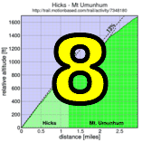

|
 |
 |
| The results crew took the group sprints in stride (Stephen Fong) |
Weather which would be considered above average for July, let alone mid-November blessed Week 7 of the Low-Key Hillclimbs as it paid its first visit to Davenport for an assault on Bonny Doon and Pine Flat Roads.
The steep slopes of Bonny Doon can be brutal in the mid-summer sun, but today the perfect temperatures allowed riders to direct all their energies at overcoming the steady grade. And they did, after passing the famous winery and turning onto Pine Flat Road, Low-Keyers were able to exploit the gentler slopes and good sight lines to regroup into min-pelotons which survived intact to the finish at Empire Grade. Howard and his crack results crew was up to the task, however, and results went better than expected.
And, after Bill Bushnell crossed the line for a strong finish in his hybrid electric, those results were an impressive Colwell sandwich as father Tracy was the first across while his young son Skyler impressively finished this very challenging climb, surviving a thrown chain to cross the line strongly. It was Mission Cycling 2-3 as Joe Mulvaney and Jacob Berkman were next to finish, ahead of Tim Clark and Clark Foy, presently leading the U23 category (sic). Ron Brunner impressed yet again, as he finished a personal-best sixth on the day. Among the women newcomer Emily Foxman qualified for her Strava T-shirt along with second place Mary Ellen Allen, Mary Ellen having scored a nice pair of medals at this year's Masters World Championships on the track.
Thanks to all who came for what was an extremely memorable Low-Key Hillclimb!
Strava T-shirt qualifiers indicated with orange background.
| pl | # | name | team | cat | time | mph | fph | score |
|---|---|---|---|---|---|---|---|---|
| 1 | 6 | Bill Bushnell | Low-Key | It Is About The Bike | 25:01 | 17.27 | 5137 | 97.94 |
| pl | # | name | team | cat | time | mph | fph | score |
|---|---|---|---|---|---|---|---|---|
| 1 | 57 | Tracy Colwell | Team Colwell | 40+ | 31:45 | 13.61 | 4048 | 124.78 |
| 2 | 115 | Joe Mulvaney | Mission Cycling | 25+ | 32:02 | 13.49 | 4012 | 123.67 |
| 3 | 34 | Jacob Berkman | Mission Cycling | 30+ | 32:05 | 13.46 | 4006 | 123.48 |
| 4 | 53 | Tim Clark | Low-Key | 40+ | 32:05 | 13.46 | 4006 | 123.48 |
| 5 | 326 | Clark Foy | San Jose Bike Club | U23 | 33:52 | 12.76 | 3795 | 116.98 |
| 6 | 39 | Ron Brunner | Low-Key | 40+ | 33:57 | 12.72 | 3786 | 116.69 |
| 7 | 123 | Christian Paquet | Doogie | 50+ | 34:08 | 12.66 | 3765 | 116.06 |
| 8 | 301 | Marcel Appelman | Mission Cycling | 40+ | 34:29 | 12.53 | 3727 | 114.89 |
| 9 | 304 | Rune Dahl | Western Wheelers | 45+ | 34:29 | 12.53 | 3727 | 114.89 |
| 10 | 600 | Klaus Brosamle | Team Zappi's (Oxford) | 25+ | 34:29 | 12.53 | 3727 | 114.89 |
| 11 | 120 | Shance Ordell | Western Wheelers | 35+ | 34:29 | 12.53 | 3727 | 114.89 |
| 12 | 218 | Tom Gardin | Low-Key | 45+ | 34:29 | 12.53 | 3727 | 114.89 |
| 13 | 1 | Dan Connelly | Low-Key | 3 | 34:29 | 12.53 | 3727 | 114.89 |
| 14 | 752 | Nils Tikkanen | Bike Trip | 3 | 35:03 | 12.33 | 3667 | 113.03 |
| 15 | 508 | Brad Ford | Silicon Valley Triathlon | 35+ | 35:13 | 12.27 | 3649 | 112.49 |
| 16 | 506 | Andy Crews | 40+ | 35:41 | 12.11 | 3602 | 111.02 | |
| 17 | 713 | Matthew McHugh | Grizzly Peak Cyclists | 45+ | 35:41 | 12.11 | 3602 | 111.02 |
| 18 | 104 | Michael Kolb | 45+ | 35:51 | 12.05 | 3585 | 110.51 | |
| 19 | 714 | Greg McQuaid | Western Wheelers | 40+ | 36:15 | 11.92 | 3545 | 109.29 |
| 20 | 724 | Ken Sato | Bike Trip | 40+ | 36:17 | 11.91 | 3542 | 109.19 |
| 21 | 87 | Josh Hayes | Sr's & Mr's of No Mercy | 30+ | 36:21 | 11.88 | 3536 | 108.99 |
| 22 | 100 | Brian Johnston | JahWind | 50+ | 36:21 | 11.88 | 3536 | 108.99 |
| 23 | 228 | Russell McCrary | Sr's & Mr's of No Mercy | 50+ | 36:21 | 11.88 | 3536 | 108.99 |
| 24 | 96 | Martin Hyland | Western Wheelers | 50+ | 36:21 | 11.88 | 3536 | 108.99 |
| 25 | 37 | Adam Brinkman | The Dirkers | 30+ | 36:53 | 11.71 | 3485 | 107.41 |
| 26 | 139 | Tim Sawyer | Bike Trip | 50+ | 36:53 | 11.71 | 3485 | 107.41 |
| 27 | 262 | Carmelo Rios | Plus 3 | 50+ | 36:53 | 11.71 | 3485 | 107.41 |
| 28 | 82 | Ryan Gibson | 35+ | 37:05 | 11.65 | 3466 | 106.83 | |
| 29 | 65 | J.D. Daniels | Eden Bikes | 35+ | 37:05 | 11.65 | 3466 | 106.83 |
| 30 | 340 | Calvin Do | Silicon Valley Triathlon | 40+ | 37:17 | 11.59 | 3447 | 106.26 |
| 31 | 721 | Chris New | 45+ | 37:19 | 11.58 | 3444 | 106.16 | |
| 32 | 244 | Naoto Sato | 45+ | 37:22 | 11.56 | 3439 | 106.02 | |
| 33 | 715 | Shayan Moini-Yekta | insert winning team here | 37:32 | 11.51 | 3424 | 105.55 | |
| 34 | 46 | Gino Cetani | Western Wheelers | 40+ | 38:00 | 11.37 | 3382 | 104.25 |
| 35 | 211 | Bryn Dole | Blekko | 35+ | 38:00 | 11.37 | 3382 | 104.25 |
| 36 | 259 | Jens Weber | Doogie | 30+ | 38:00 | 11.37 | 3382 | 104.25 |
| 37 | 717 | Li Moore | 30+ | 38:00 | 11.37 | 3382 | 104.25 | |
| 38 | 521 | Chris Gros-Balthazard | 4 | 38:07 | 11.33 | 3372 | 103.94 | |
| 39 | 58 | Kevin Comerford | Eden Bikes | 30+ | 38:13 | 11.30 | 3363 | 103.66 |
| 40 | 719 | Pieter Morgan | 38:26 | 11.24 | 3344 | 103.08 | ||
| 41 | 716 | Nicholas Moless | TurningWheels for Kids | 30+ | 38:28 | 11.23 | 3341 | 102.99 |
| 42 | 726 | Martin Spierings | Santa Cruz Endurance | 30+ | 38:28 | 11.23 | 3341 | 102.99 |
| 43 | 704 | Rick Ferrell | 50+ | 38:28 | 11.23 | 3341 | 102.99 | |
| 44 | 730 | Tyler Swartz | Team Roaring Mouse | 4 | 38:28 | 11.23 | 3341 | 102.99 |
| 45 | 103 | Larry Klein | Doogie | 50+ | 38:37 | 11.19 | 3328 | 102.59 |
| 46 | 732 | Alan Teo | 30+ | 39:12 | 11.02 | 3279 | 101.06 | |
| 47 | 727 | Tim Sullivan | 45+ | 39:12 | 11.02 | 3279 | 101.06 | |
| 48 | 158 | David Vrane | Sr's & Mr's of No Mercy | 45+ | 39:37 | 10.90 | 3244 | 100.00 |
| 49 | 419 | Dave Rossow | 39:37 | 10.90 | 3244 | 100.00 | ||
| 50 | 161 | Alan Weatherall | San Jose Bike Club | 45+ | 39:37 | 10.90 | 3244 | 100.00 |
| 51 | 729 | Hunter Swartz | 25+ | 40:09 | 10.76 | 3201 | 98.67 | |
| 52 | 61 | Rob Cosaro | Doogie | 50+ | 40:20 | 10.71 | 3186 | 98.22 |
| 53 | 229 | Paul Melville | Doogie | 60+ | 40:44 | 10.61 | 3155 | 97.26 |
| 54 | 605 | David Hillman | Precision Stone Racing | 55+ | 40:48 | 10.59 | 3150 | 97.10 |
| 55 | 164 | Robert Zeljko | Almost There | 40+ | 40:48 | 10.59 | 3150 | 97.10 |
| 56 | 720 | Erik Needham | Team Roaring Mouse | 35 Cat4 | 40:48 | 10.59 | 3150 | 97.10 |
| 57 | 753 | Q P Liu | Bikeforums.net | 40+ | 41:07 | 10.51 | 3126 | 96.35 |
| 58 | 132 | Thomas Rabedeau | SLACer | 50+ | 41:07 | 10.51 | 3126 | 96.35 |
| 59 | 142 | Jeff Shute | 30+ | 41:07 | 10.51 | 3126 | 96.35 | |
| 60 | 327 | Nicholas Brummell | Atlas | 45+ | 41:14 | 10.48 | 3117 | 96.08 |
| 61 | 98 | Peter Ingram | Independent | 55+ | 41:18 | 10.46 | 3112 | 95.92 |
| 62 | 324 | Jack Holmgren | SF Randonneurs | 55+ | 41:20 | 10.45 | 3109 | 95.85 |
| 63 | 75 | David Engelbrecht | Summit chuters | 40+ Tandem | 42:03 | 10.27 | 3056 | 94.21 |
| 64 | 70 | Giles Douglas | 35+ | 42:24 | 10.19 | 3031 | 93.44 | |
| 65 | 316 | Chris Toshok | Mission Cycling | 35+ | 42:39 | 10.13 | 3013 | 92.89 |
| 66 | 41 | Patrick Callahan | Hara | 40+ | 42:52 | 10.08 | 2998 | 92.42 |
| 67 | 709 | Will Hahn | Santa Cruz Endurance | 35+ | 43:09 | 10.01 | 2978 | 91.81 |
| 68 | 216 | David Fitch | San Jose Bike Club | 65+ | 43:09 | 10.01 | 2978 | 91.81 |
| 69 | 333 | Vinay Ravuri | Georgia Tech | 35+ | 43:30 | 9.93 | 2954 | 91.07 |
| 70 | 607 | Justin Madison | Precision Stone Racing | 40+ | 43:36 | 9.91 | 2948 | 90.86 |
| 71 | 208 | Jay Cohan | Spike the Wonder Dog | 45+ | 43:44 | 9.88 | 2939 | 90.59 |
| 72 | 85 | Gary Griffin | Bike Trip | 55+ | 43:56 | 9.83 | 2925 | 90.17 |
| 73 | 420 | Christian Templeton | San Jose Bike Club | 44:27 | 9.72 | 2891 | 89.13 | |
| 74 | 66 | Jon Degenhardt | Alameda Velo | 50+ | 44:38 | 9.68 | 2879 | 88.76 |
| 75 | 751 | John Hillstrom | Yet | 44:48 | 9.64 | 2869 | 88.43 | |
| 76 | 254 | Plamen Velikov | SLACer | 50+ | 45:38 | 9.47 | 2816 | 86.82 |
| 77 | 247 | Tom Stanis | 30+ | 47:08 | 9.17 | 2727 | 84.05 | |
| 78 | 42 | Kley Cardona | SF Randonneurs | 45+ | 47:10 | 9.16 | 2725 | 83.99 |
| 79 | 202 | George Artz | 55+ | 47:10 | 9.16 | 2725 | 83.99 | |
| 80 | 728 | Raoul Surcouf | Team America | 40+ | 48:04 | 8.99 | 2674 | 82.42 |
| 81 | 507 | Klaus Fleischmann | 40+ | 50:10 | 8.61 | 2562 | 78.97 | |
| 82 | 334 | Thomas Maslen | Western Wheelers | 45+ | 50:25 | 8.57 | 2549 | 78.58 |
| 83 | 706 | Nat Friedman | 30+ | 51:01 | 8.47 | 2519 | 77.65 | |
| 84 | 708 | John Guzik | 45+ | 51:09 | 8.45 | 2513 | 77.45 | |
| 85 | 166 | Christian Hilty | Team America | 40+ | 52:26 | 8.24 | 2451 | 75.56 |
| 86 | 224 | Robert Lensch | F1 fans | 50+ | 52:39 | 8.21 | 2441 | 75.25 |
| 87 | 20 | Michael Ahern | LGBRC | 40+ | 55:06 | 7.84 | 2332 | 71.90 |
| 88 | 149 | Tim Sutton | Plus 3 | 50+ | 57:09 | 7.56 | 2249 | 69.32 |
| 89 | 239 | Tony Otoole | F1 fans | 55+ | 59:59 | 7.20 | 2143 | 66.05 |
| 90 | 56 | Skyler Colwell | Team Colwell | Junior | 91:40 | 4.71 | 1402 | 43.22M |
| pl | # | name | team | cat | time | mph | fph | score |
|---|---|---|---|---|---|---|---|---|
| 1 | 705 | Emily Foxman | 40:51 | 10.58 | 3146 | 117.27 | ||
| 2 | 700 | Mary Ellen Allen | Sr's & Mr's of No Mercy | 60+ | 46:01 | 9.39 | 2793 | 104.10 |
| 3 | 113 | Karis Mcfarlane | Eden Bikes | 30+ | 49:46 | 8.68 | 2582 | 96.26 |
| 4 | 171 | Letitia Davis | Plus 3 | 45+ | 53:49 | 8.03 | 2388 | 89.01 |
| 5 | 750 | Andrea Ivan | 55+ | 62:16 | 6.94 | 2064 | 76.93 | |
| 6 | 712 | Christina Janowski | WunderFoo | 35+ | 63:00 | 6.86 | 2040 | 76.04 |
| 7 | 723 | Renee Ross | Random Girls | 30+ | 65:03 | 6.64 | 1976 | 73.64 |
| 8 | 710 | Christine Holmes | Low-Key | 45+ | 67:19 | 6.42 | 1909 | 71.16 |
| pl | team | score | riders |
|---|---|---|---|
| 1 | Mission Cycling | 362.04 | Joe Mulvaney, Jacob Berkman, Marcel Appelman, Chris Toshok |
| 2 | Low-Key | 355.06 | Bill Bushnell, Tim Clark, Ron Brunner, Tom Gardin, Dan Connelly, Christine Holmes |
| 3 | Western Wheelers | 339.06 | Rune Dahl, Shance Ordell, Greg McQuaid, Martin Hyland, Gino Cetani, Thomas Maslen |
| 4 | Bike Trip | 329.63 | Nils Tikkanen, Ken Sato, Tim Sawyer, Gary Griffin |
| 5 | Doogie | 322.91 | Christian Paquet, Jens Weber, Larry Klein, Rob Cosaro, Paul Melville |
| 6 | Sr's & Mr's of No Mercy | 322.07 | Josh Hayes, Russell McCrary, David Vrane, Mary Ellen Allen |
| 7 | 321.59 | Michael Kolb, Ryan Gibson, Li Moore, Tim Sullivan, Jeff Shute, Giles Douglas, Tom Stanis | |
| 8 | San Jose Bike Club | 308.79 | Clark Foy, Alan Weatherall, David Fitch, Christian Templeton |
| 9 | Eden Bikes | 306.75 | J.D. Daniels, Kevin Comerford, Karis Mcfarlane |
| 10 | Plus 3 | 265.74 | Carmelo Rios, Letitia Davis, Tim Sutton |
| 11 | Silicon Valley Triathlon | 218.75 | Brad Ford, Calvin Do |
| 12 | Team Roaring Mouse | 200.09 | Tyler Swartz, Erik Needham |
| 13 | Santa Cruz Endurance | 194.80 | Martin Spierings, Will Hahn |
| 14 | Precision Stone Racing | 187.96 | David Hillman, Justin Madison |
| 15 | SLACer | 183.17 | Thomas Rabedeau, Plamen Velikov |
| 16 | SF Randonneurs | 179.84 | Jack Holmgren, Kley Cardona |
| 17 | Team Colwell | 168.00 | Tracy Colwell, Skyler Colwell |
| 18 | Team America | 157.98 | Raoul Surcouf, Christian Hilty |
| 19 | F1 fans | 141.29 | Robert Lensch, Tony Otoole |
| 20 | Team Zappi's (Oxford) | 114.89 | Klaus Brosamle |
| 21 | Grizzly Peak Cyclists | 111.02 | Matthew McHugh |
| 22 | JahWind | 108.99 | Brian Johnston |
| 23 | The Dirkers | 107.41 | Adam Brinkman |
| 24 | insert winning team here | 105.55 | Shayan Moini-Yekta |
| 25 | Blekko | 104.25 | Bryn Dole |
| 26 | TurningWheels for Kids | 102.99 | Nicholas Moless |
| 27 | Almost There | 97.10 | Robert Zeljko |
| 28 | Bikeforums.net | 96.35 | Q P Liu |
| 29 | Atlas | 96.08 | Nicholas Brummell |
| 30 | Independent | 95.92 | Peter Ingram |
| 31 | Summit chuters | 94.21 | David Engelbrecht |
| 32 | Hara | 92.42 | Patrick Callahan |
| 33 | Georgia Tech | 91.07 | Vinay Ravuri |
| 34 | Spike the Wonder Dog | 90.59 | Jay Cohan |
| 35 | Alameda Velo | 88.76 | Jon Degenhardt |
| 36 | Yet | 88.43 | John Hillstrom |
| 37 | WunderFoo | 76.04 | Christina Janowski |
| 38 | Random Girls | 73.64 | Renee Ross |
| 39 | LGBRC | 71.90 | Michael Ahern |